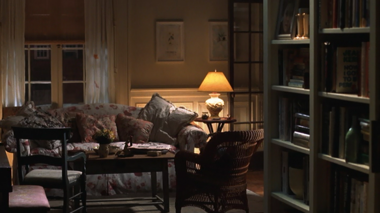

.png)
.PNG)
.PNG)
.PNG)
.PNG)
.PNG)
.JPG)
.JPG)
.PNG)
.PNG)


The other day, I shared the above photo with you from our master bedroom. The vase of pencils always makes me think of this quote:
“Don’t you love New York in the fall? It makes me want to buy school supplies. I would send you a bouquet of newly sharpened pencils if I knew your name and address.”
Do you remember those words spoken by Tom Hanks in You’ve Got Mail?
You’ve Got Mail is one of my all time favorite movies. I loved the plot, and I adored the architecture and the interior design of the sets. If you recall, Kathleen Kelly, one of the main characters, is the owner of a small bookstore, and she lives in a brownstone in New York’s Upper Westside. The interior of her home is soooo charming. French doors, bookshelves, a comfy couch, and a wicker chair. How could you resist?

There is even an old upright piano in her living room (with the sign from her shop.)

Her kitchen is tiny but precious and efficient.
The set designers used a nice mix of some old painted pieces in her home.
You can see into her bathroom located behind bookshelves here. (Don’t you love those sconces?)
And here is Kathleen’s desk where she receives email from her rival Joe Fox. I am not usually one to like wallpaper, but it works beautifully here.

The entire movie is one of contrasts. You see Kathleen’s charming home, and then you see Joe’s home. You see Kathleen’s shop. Then you see his mega-store. And so it goes through the entire film. In contrast to Kathleen’s desk, here is Joe’s desk…
and his hallway.
Another reason I have adored You’ve Got Mail is because of The Shop Around the Corner, Kathleen’s children’s bookstore.
As an elementary teacher, I think children’s literature is wonderful, and that bookshop was filled with many things I recognized and loved.
One of the props in the movie that was among my favorites was the poster hanging behind Meg Ryan in this scene – All We Really Needed to Know We Learned From Children’s Books. I have looked everywhere I can think of but have been unable to locate a copy of it. I would love to know a source if you know one.
You’ve Got Mail was a romantic comedy, but I always tear up at this next scene where the shop was closed and emptied of its contents.
If you’ve seen it, did you get a lump in your throat here too? (And did you notice and love the movie sets, too?!)
You’ve Got Mail (Deluxe Edition)
I have something extra I want to share with you about this movie in my next post. So please be sure to check back here this weekend. I think you will enjoy it. 🙂
Until then I am leaving you with another question to talk about today…
What is your very favorite movie?
I am looking forward to reading your answers!


.PNG)
OM-Goodness!!!! This is my favorite movie of all times. I watched it the first time in fall 2004….just before my separation and divorce. I must have watched it over 300 times in the year that followed. NO KIDDING! I may not have watched it all the way through each time, but it was on almost every evening. It kept me company and comforted me somehow. The GREAT music, the warm & inviting interiors (Most of my decorating now mimics Kathleen Kelly’s home, it’s a perfect “feel-good” environment)….and those WONDERFUL quotes! Well, suffice to say I could pretty much recite the movie by the end of that year. 10 years later, I still watch it 3-4 times a year.
Thanks to Gail for posting the text from the “All we needed to know” poster!
Mary
Definitely one of my all times favourites too! One thing I’d never noticed until looking at the photos you’d posted, was the placement of the furniture in Kathleen’s place. The bed and her desk in particular – not all around the edges of a room – really nice. Have a lovely day. x
———————————————————————
It did have unusual furniture arrangements, didn’t it? I wonder if that was to accommodate all the cameras, or did they really just want the rooms to look like that? The bed at an angle was very different to me, and I like the desk out in the middle of that area. You’ve got a good eye for spotting that! 🙂
Kelly
I loved your post! Somehow I missed seeing You’ve Got Mail when it came out, although I’ve always heard how cute it was. Our family loves The Little Shop Around the Corner starring Jimmy Stewart, so this was a treat. I finally watched it yesterday (free on Amazon Prime),and I fell in love with Kathleen/Meg Ryan’s brownstone, bookshop, hair and clothes! Now, I’m wanting that last outfit she wore in the movie, where she finally meets Joe/Tom Hanks!
My favorite movies include Seven Brides for Seven Brothers, Anne of Green Gables/Anne of Avonlea, Somewhere in Time (great soundtrack), Little Women (another great soundtrack), Father of the Bride Parts 1 and 2, Pride and Prejudice (with Colin Firth, of course), An Affair to Remember (the inspiration for Sleepless in Seattle, another favorite), and most definitely It’s A Wonderful Life! It’s so hard to choose just one! :)I’m sure I’ll think of more right after I post the comment!
Thanks again for sharing…and Happy Fall!
Amy
———————————————————————–
So glad you liked it Amy! That last outfit was very cute. I loved the Ann of Green Gables series as a child! You named some of my favorites. 🙂
Kelly
Sweet post, charming movie. Huge Meg Ryan fan, however, I think my favorite movie of hers was French Kiss (maybe it was the locales!). Agree with all the scene/setting love for You’ve Got Mail, her home and bookstore were chock full of personality. And, yes, that moment when we see the empty shop really packed a punch. Favorite movie choice is really difficult, I think I’m more a devotee of the individual performances in a long list of films. But, someone already mentioned a perennial fave of mine, Last of the Mohicans, I could combine history and some “Daniel Day-Lewis love” all in one. Another goodie with a notable cast, sizzling romance, and a mystery: The Big Easy! On a side note, I see where Dan in Real Life was mentioned: great choice, filmed here in Rhode Island, and just happened to be airing several times this weekend.
———————————————————————
Paula, thanks for all your thoughts on the movies here! With several people recommending Dan in Real Life, I will need to add that one to my movies-to-see list very soon.
Kelly
I do love that movie, however one of my favorites, also has to do with a book store and a handsome Brit. (Could that be a teacher thing?! HA!) I love Notting Hill with Hugh Grant and Julia Roberts. I loved the storyline, the quaint neighborhood of Notting Hill, and the London scenery. I have a dozen favorites from Gone with the Wind to Win a Date with Tad Hamilton! But, I could definitely watch Notting Hill over and over.
——————————————————————–
Would you believe I have never seen it?! I believe I have seen parts of it, just not all of it. And I think Hugh Grant is precious. I need to watch that one very soon.
Kelly
Love this movie too, I’m sure we’ve talked about it before, I will always stop and watch it if it is on. You usually can’t go wrong with a Tom Hanks or Meg Ryan movie. As Far as favorite movies, I love something that is witty and has a happy ending. Love John Krasinski in It’s Complicated. A few of my favorites include Valentine’s Day, Love Actually, Sleepless in Seattle, The Lucky One….hard to narrow them down. Also, loved Diane Keaton’s beach house in Something’s Gotta Give.
———————————————————————-
I think John Krasinski had the best lines in It’s Complicated. I forgot all about Valentine’s Day! That was a cute one.
Kelly
Oh, and one of my favorite movies for house stalking is Bewitched. Nicole Kidman’s house was so cute. I bought the movie just to study the house. I was single at the time and thought I wanted my house to look just like that. Now that I am married, I could never pull that off, but sucha cute space.
———————————————————————
I will add Bewitched to my list of movies to watch, too! Love Nicole Kidman…especially in Australia.
Kelly
Love, love, love this movie!!! The bookstore was the inspiration for my commercial design project in school. I had so much fun with that. I’ve referred back to it often. I would just love to have a place like that.
Hmmmmm….I think I’m going to go see if it’s on Netflix…
———————————————————————–
Well how cool is that!! What a fun project and such great inspiration! That shop was just precious.
Kelly
You’ve Got Mail is certainly one of my favorites along with Father of the Bride, Christmas with the Kranks, Sweet Home Alabama, Miss Potter, Little Women, Kitt Kitredge, Love takes Wing, A Walk to Remember, just to name a few! Well, I believe it will be movie night tonight and check out some of the readers’ favorites!
———————————————————————-
Anita, I do believe you like movies! LOL And you must like “chick flicks” from all the title you have listed. I love them too. I bought my daughter a copy of Little Women several years ago, but I have not watched it. If it is around here, I need to watch it.
Kelly
My favorite movie is “While You Were Sleeping”. I love when Sondra Bullock gets dropped off at the house of the family she befriends and it is all decorated for Christmas with a little sprinkling of snow on the ground. Love, love, love it. I also enjoy “You’ve Got Mail” and just watched “Raising Helen” last night with Kate Hudson, very cute. Have a great weekend! Mickey
———————————————————————-
Loved While You Were Sleeping!! I haven’t seen Raising Helen…another one added to my every growing list!
Kelly
You’ve Got Mail is one of my favorite feel good movies. Love Nora Ephron movies. She was a true genius in creating movies and sets that made you wish you could step inside and live there. Some of my other all time favorite movies include Under the Tuscan Sun, It’s Complicated, Something’s Gotta Give, Indian Summer and How to Make an American Quilt. Great houses and spaces in all of those movies. Last day of Summer y’all – enjoy!
——————————————————————–
One of the best feel good movies to me too! I have enjoyed all of the movies you named, except I have never heard of How to Make an American Quilt. Looks like another one I need to check out. Thank you for the recommendation!
Kelly
I’m so glad to know I’m not the only one who notices the decor on movies. I think it would be fun to be an interior designer for a movie or a show.
———————————————————————
Oh no you are not alone in that! And what a dream job being a set designer would be! Goodness I would love that!
Kelly
This is one of my favorite movies too. I love everything about it: the story, set, characters, and the soundtrack. This movie always puts a smile on my face
———————————————————————-
There are sooo many of us that love this movie! It is definitely one of those “happy place” movies for me too.
Kelly
Kelly, I love that line about the pencils too and think of it every fall. So much to love about that movie. I also love When Harry Met Sally. I’ve been reading through the comments and noting other movies I need to watch. Father of the Bride has such a lovely home in it that I watch it for the house as much as the story. Thanks for your lovely blog!
———————————————————————
Glad you enjoyed the post (and all the comments!) Anne. I think we have a great list of movies going here!
Kelly
Hi Kelly. I love You’ve Got Mail. It’s one of my all-time favorite movies too. I especially love Kathleen Kelly’s bookstore. I love the lights that hang down, the floor, everything. I love bookstores and I would definitely visit this one, if it was real 😉 My favorite movies are It’s Complicated, 50 First Dates, Sleepless in Seattle. I watch them whenever they are on and it doesn’t matter that I’ve seen them 50 times already.
Have a great weekend.
Kristi
———————————————————————-
So glad to know that I am not the only one who watches movies over and over and over again! Yes, those lights were beautiful AND the floors. I loved the cabinets that held all the books, too. Wouldn’t it be a great bookstore to spend time in?!
Enjoy your Sunday!
Kelly
That is one of my favorite movies! My mother loved it and would watch it often. So many really wonderful movies and it is hard to pick just one. To Kill a Mockingbird is one I never get tired of. Oh! And It’s Complicated, Sleepless in Seattle, Gone With the Wind. Could go on and on. Great post!
———————————————————————
Thank you Theresa! I forgot all about Gone With the Wind! Thanks for the reminder. Certainly a great house in that one. Sounds like we all need to do a marathon of Nora Ephron movies. 🙂
Kelly
Been thinking about my favorite movie and decided that Somewhere in Time is my choice. My daughter and I want to go to The Grand Hotel– that is a dream of hers. I enjoyed your comments about the scenes in YGM. Really hadn’t noticed the decor that much in the homes but truly enjoyed the book store scenes. I liked the other reader’s sharing their “fav” movies and will try to rent some of them.
———————————————————————
I have wanted to go to the Grand Hotel for the very same reason! In fact, I keep telling my sons who are currently traveling across the country, that they should make it a point to go see Mackinac Island just so they can see that hotel. (Of course, they have not listened to their mom!) I am loving all the recommendations in the comments too. Looks like we need to have a number of movie nights!
Kelly
Kelly,
The funny thing is most movies I love is because of the houses in them FATHER OF THE BRIDE, IT’S COMPLICATED, I usually remember their house before I remember the name of the movie. I guess I am just strange that way…
Have a great weekend.
Jeanne
———————————————————————-
You are not strange at all! House lovers will definitely appreciate the sets of movies. I love the movies you named for both their wonderful comedy AND the house. I guess it is the same as my loving restaurants for both their delicious food and their atmosphere.
Kelly
Well, I loved everything that you loved in You’ve Got Mail. I can’t believe there is another person or people that do what I do, watch the movie for the set design as much as the actors. Other favorite set design movies include… Family Stone, Baby Boom, Unfaithful,The Family Man, When Harry Met Sally, Under the Tuscan Sun and Must Love Dogs. Seems that they always give Diane Keaton, Diane Lane and Meg Ryan the best movie houses! My favorite non-movie set house movie would be Funny Girl!
————————————————————————
Oh yes, there are many of us who love movies for the sets! You are not alone. 🙂 Family Stone…yes that is SUCH a great movie house (and such a sad movie!) You have named a bunch of good ones!
Kelly
You’ve Got Mail is such an enjoyable movie -one of my favorites. I also love What’s Up Doc?, with B. Streisand & Ryan O’Neal and The Glass Bottom Boat, with Doris Day. I am an old-fashioned girl who loves a Rom-Com with a happy ending!
I looked for the poster and it appears that it is no longer available, but you can print out what it says from Google.
——————————————————————–
I used to looooove Barbara Streisand movies, but I haven’t watched one in quite awhile. I am right there with you on rom-com’s with happy endings!
Kelly
This is my all time favorite movie!
———————————————————————-
Isn’t it great?! It was my favorite until It’s Complicated came out, but I still love You’ve Got Mail, too. 🙂
Kelly
Love this movie and you are right the sets are great. I would love to work in that bookstore and when I fantasize about winning the lottery, I always open a store just like it and charge a dollar a book ☺ To find a link to print that poster yourself try: AdvancedEtiquette.com/Fulghum/.
My favorite movie is The Last of the Mohicans (mid 90’s) I saw it with my daughter and her best friend when they were teens. I love the plot, the beautiful scenery filmed in the mountains of NC, and the music…..I have seen it over and over and listen to the CD all the time. The librarian in me must disclose the movie is nothing like the book, in fact it is the only movie IMHO that is ten times better than the book. Also, not much in the way of houses, but oh, the forests and mountains make up for that.
———————————————————————
Martha, I like your lottery prize idea! If Last of the Mohicans was filmed in the mountains of North Carolina it would have to have beautiful scenery. I have listened to that gorgeous soundtrack. My oldest son is a movie soundtrack fan. You name the movie. He’s got the soundtrack.
Kelly
Love “You’ve Got Mail”….Mossy. So many great scenes, but I love when she is walking to work and The Cranberries are singing Dream. One of my favorite movies is The Bishop’s Wife with Cary Grant. It’s considered a Christmas movie, but since I listen to Christmas music pretty much year round, I can watch it anytime.
———————————————————————
Now you’ve got that song going in my head! (But that is such a great scene…they are right on each other’s heels everywhere they go.) Mossy – hilarious! I will need to watch The Bishop’s Wife if I can find a copy of it. Like you, I adore Christmas music year round and Christmas movies. 🙂
Kelly
*Howard’s End* is my favorite movie…love the London townhome and the Howard’s End house.
But now I’m going back and watching *You’ve Got Mail* again!
~Ann
———————————————————————-
I have read that the sets in that movie are fantastic. I have not seen it, but I will add it to my list of movies to watch. Thanks for the recommendation!
Kelly
Love this movie too. Her little book shop is my dream job. How great to have that shop window to create wonderful displays in.
I have too many favorite movies to count….love movies!
———————————————————————
Oh yes, that would be such a dream job! I loved that shop window too. Someone needs to do another Hanks and Ryan movie again, don’t they?
Kelly
All We Really Needed to Know We Learned From Children’s Books
(Seen in the 1998 movie “You’ve Got Mail!”, this originally was a poster published by Koen Book Distributors in 1997.)
——————————————————————————–
Do something to make the world more beautiful.
(Miss Rumphius)
Clean up the house when you’re through playing.
(Cat in the Hat)
You don’t have to fight if you don’t want to.
(The Story of Ferdinand the Bull)
We’re all meant to need each other.
(Missing May)
Stay golden.
(The Outsiders)
If you think you can, you can.
(The Little Engine That Could)
Best friends are terrific!
(Charlotte’s Web)
Don’t leave home without your purple crayon!
(Harold and the Purple Crayon)
Eat a balanced meal every day.
(Bread and Jam for Frances)
There’s no place like home.
(The Wizard of Oz)
Never eat someone’s else’s vegetables.
(The Tale of Peter Rabbit)
It doesn’t matter how small you are.
(The Borrowers)
It doesn’t matter how big you are.
(The BFG)
Don’t cross the street without your mother!
(Make Way for Ducklings)
Never eat the last piece of the puzzle!
(Curious George Goes to the Hospital)
Ole Golly is right. Sometimes you have to lie.
(Harriet the Spy)
Be glad you live in a world where there are Octobers.
(Anne of Green Gables)
Expect all the summers to be magic ones.
(Gone Away Lake)
——————————————————————————–
———————————————————————–
Oh my gooooooodness! Thank you for all this Gail! Now if I can figure out how to make my own poster from it! 🙂
Kelly
Kelly,
You’ve got mail is not my favorite but I loved the scenes you’ve mentioned. Meg Ryan and Tom Hanks-wise, I lean toward Sleepless in Seattle. But my favorite “chick flicks” is Nottinghill with Hugh Grant and Julia Roberts with Love Actually and Sense & Sensibility (Emma Thompson’s version) making it a close tie. My favorite drama is Out of Africa. I can never get enough of some of these movies. Mr. B is a pretty good sport and watches with me sometimes.
Hope your weekend is wonderful, we’re off to a wedding in Santa Barbara.
xo,
Karen
———————————————————————-
Oh…Out of Africa. What an amazing movie! How can you go wrong with Robert Redford and Meryl Streep? The scenery and the music…so very romantic. I do love that one too. Enjoy your weekend wedding in Santa Barbara! How fun!
Kelly
I have many “favorite” movies, including YGM and Greese, but I really LOVE Somewhere In Time with Christopher Reeve and Jane Seymour. Not only is it romantic, but the scenery is beautiful.
———————————————————————-
Somewhere in Time is SUCH a hauntingly beautiful movie. The actors are beautiful, and yes the scenery is beautiful, and the MUSIC! It played in my heads for days after watching it. Then I bought the soundtrack and played it over and over again. And of course the Grand Hotel and Mackinac Island are amazing. Thanks for making me remember that one.
Kelly
One of my favorites, too, along with When Harry met Sally and Sleepless in Seattle. Notice that all of Meg Ryan’s homes are furnished in the same comfortable styles and I have always wondered if that was her choice or the director’s. My favorite line”when you meet the person you want to spend the rest of your life with you want the rest of your life to begin right away? or something like that.
———————————————————————
I’m pretty sure the director and set designer are the ones who choose the style. Wouldn’t it be fun to BE the set designer?! Dream job! That movie has sooo many great lines. I have even seen prints of quotes from it for sale on Etsy. 🙂
Kelly
Oh I love You’ve Got Mail! I watch it often because of the premise and Kathleen’s adorable Brownstone walk-up of course!
It is really well written (Nora Ephron?) and the sets are just perfection.
———————————————————————
Sarah, I just knew YOU would love the sets. Adorable is a good word to describe Kathleen’s home.
Kelly
Oh, that is one of my favorite movies. I also love Something’s Gotta Give, It’s Complicated…I don’t have an all time favorite. I rematch movies with great architecture, great houses…interior sets. I’ll watch movies just for that reason…obviously I’m not alone! 😉
———————————————————————
Yes, obviously we should all form a Movie House Lover’s club! 🙂 And you just named several of my favorites too.
Kelly
Oh, I loved “Something’s Gotta Give” with Diane Keaton. The rooms in that movie were so lovely. I loved “You’ve Got Mail” as well and may just have to watch it again this weekend. Thanks for the tour!
———————————————————————
One of the best movie houses EVER! And that is such a great movie for making you laugh hysterically and cry too. (Can you tell I love that one too?!)
Kelly
I love You’ve Got Mail too! I am a Reading teacher so I love Ms. Kelly’s book store, The Shop Around the Corner, also! I have two all time favorite movies. They are Sweet Home Alabama and Beetle Juice (beetlegeuse). I even take Sweet Home Alabama with me to the dentist to watch while they work on my teeth so I relax.
———————————————————————-
Sweet Home Alabama IS a great movie! That is too funny that you take it to the dentist (but a smart thing to do!)
Kelly
Hey, Kelly. You know I couldn’t name just one favorite movie. Every time you ask for a favorite…. I have 10. I do love You’ve Got Mail for all the same reasons you do. Thank you for sharing the photos. The movie also reminds me of my husband’s hardware store closing because a big chain came to town…so we can really relate….especially the empty store. I think my new favorite movie is going to be Father of the Bride because my daughter just got engaged this week. We have already been quoting lines from the movie. My husband is going to be “so Steve Martin” about this wedding.
———————————————————————
Oh how awful about your husband’s store closing. The empty store would be heartbreaking to see. On a happier note..congratulations on your daughter’s engagement! How funny that your husband will be Steve Martin. Love it!
Enjoy your Sunday!
Kelly
I also love that quote from the movie and every time I watch it I want to go out and buy some pencils! Any of Nora Ephron or Nancy Meyers films I enjoy watching multiple times not only for the story but also to look at the houses and the way they have been decorated. I especially love the movie “Father of The Bride” for both reasons mentioned above. Having grown up in Pasadena, Ca. whenever we visit I ask my husband to drive me by the house where the movie was filmed. Thanks so much for this blog and have a great weekend. Lindy
——————————————————————–
Oh Father of the Bride has such a great house! How fun that you can just drive by it! 🙂 Glad you enjoyed the post.
Kelly
I know that you will be directed to a source for the poster. Be sure to pass the Info to your readers…..some of us still love kiddy lit…even in retirement! Have a great weekend!
———————————————————————
Debbie, you are right! Scroll down to Gail’s comment on the post, and you will find the text for the poster. No one has located the poster itself since it has long been out of print, but I am happy to find the list of things on it.
Kelly
I thought for sure NO one would have even heard of my ALL time favorite movie and low and behold Arlene listed it also..unbelievable..”One True Thing”. The book and the movie are wonderful!!! I reread the book about every 5 years and still cry from the middle to the end! Just like Arlene, I fell in love with the house the family lives in. Arlene, remember the plates hanging in the kitchen? I started hanging plates after I saw that movie (and that was LONG before it was really popular to do that) You know I think the movie came out in the 80’s . It was before anyone really knew who Renee Zellweger was. Kelly, if you have not seen this movie try to get your hands on it because you too would love the house (and story) Another great post! Thanks!
———————————————————————-
Okay…definitely got to get my hands on a copy of this. Must be mighty good!
Thanks for seconding Arlene’s recommendation. 🙂
Kelly
Kelly, of course, this is my all time favorite movie! I love all the things you mentioned too. I really love her clothes in this movie too. I love their exchange when she gets sick and he brings her daisies. He knows it’s her, but she doesn’t. Such a great movie. My hubby bought it for me a few years ago along with Sleepless in Seattle, another fav! Ok, now I am going to have to fit these in maybe this weekend! Seeing that empty sweet, charming bookstore that was her mother’s when she has to close…tears! We much be kindred spirits!:) Well, have a great fall weekend. Hubby is going hunting, must be fall! patty 🙂
———————————————————————
You are naming so many of my favorite scenes from the movie, Patty! That scene when she is sick…oh my! I should have mentioned the clothes in my post. I loved them too, and Nora Ephron stated that they purposely chose classic styles in solid classic colors so that the movie would be timeless. My closet pretty much matches a lot of what Kathleen wears in the movie – solids…tailored classics (there is one gingham shirt thrown in for good measure! :))
We are definitely kindred spirits. Enjoy your fall weekend!
Kelly
I have this DVD bet I have watched this film 25 times. I love Meg’s
character she is a kind and deliberate person. She seems to have
a strong moral compass which is why she is so upset about the caviar/garnish. I could see myself feeling the same indignation
as Kathleen with Joe over that.I too am a fan of many of the quotes in this film. The one you mentioned is a favorite. I cry at the ending every single time.To be honest I have never noticed her apartment decor it is charming. I am in love with her bookstore.
I don’t know if many people are aware that Nora Ephron who wrote this screenplay also wrote Sleepless in Seattle and Harry met Sally and many others,died last year.She provided us with many hours of entertainment. As for my favorite movie I am not sure
but I am fond of movies with “happy endings” like this one.
———————————————————————
You are so right about the character of Kathleen Kelly. Oh yes, cry at that happy ending every time. (I am going to cry any time Somewhere Over the Rainbow is playing anyway…that just added more tears to the pot!) I liked YGM more than Ephron’s Sleepless in Seattle because the ending on this one was so much better. I always felt like Sleepless in Seattle needed a sequel.
Kelly
YES! Love this movie, and the architecture and the sets as you mentioned are awesome! Hmmm, I see a movie rental in my future! Have a great weekend Kelly!
———————————————————————-
Glad you liked it Sally! Hope you can fit in a movie night to enjoy the movie all over again.
Kelly
Like all the other ladies, this is one of my favorite movies as well. I could live in Kathleen’s house and work at that book shop. It is just ENCHANTING!! Another one of my favorite movies is One True Thing with Meryl Streep and Renee Zellweger. I love Meryl’s house in that movie too. In fact I took some decorating tips from it!! And another house I love is Mike and Hope’s house on thirtysomething…I wanted to live there too. Thirtysomething is my favorite tv show of all time. And lastly, Georgie’s house from Sisters inspired me as I was decorating my kitchen. I always have an eye on the homes in movies and tv shows!!
———————————————————————
Enchanting! Love it! Great movie reference, Arlene. I will have to look for that Meryl movie. I’ve not seen it, and you know if it has a great house I will want to see it. I LOVED Thirtysomething, but boy has it been a long time since I have watched an episode. I had the biggest crush on Peter Horton! Did you know he directed the pilot of Grey’s Anatomy and was once married to Michele Pfeiffer? (Such important information LOL)
Kelly
I love You’ve Got Mail for all the reasons you mentioned. Your images and comments are terrific, as always. But there is another reason it is my favorite… Tucked in the movie is a song about the orchestra that my third grade teacher, Mrs. Searcy, taught us. We started everyday singing that song, each row of students making the sound of the instruments in the orchestra. We LOVED it or at least I did. Mrs. Searcy also taught us to draw and paint and would take our artwork to share with fellow adult artists that she “hung out with.” She also instilled in us a love of literature, took the fear out of math, and made South Carolina social studies so fun that I longed to go back in time and live as a Native American. I guess you can tell she was my favorite teacher. Anyway, because of her I went on and studied art and have had an amazing career in the arts. I thank her often and that is why You’ve Got Mail is on my top ten list of great movies. By the way searcy, and the many other spellings of the word, means “special surprise.”
——————————————————————–
This has got to be one of my favorite comments on the blog! Love your story about your teacher and the movie. WONDERFUL! I know the song of which you speak – in the Thanksgiving scene of the movie. BUT every time I watch You’ve Got Mail, that darn song plays in my head for DAYS!!! The horn, the horn, it sounds so forlorn…. 🙂 Even now I can hear it in my head!
Kelly
I also love “You’ve got mail” – so many great scenes, lines, etc. One that always makes me laugh is when Joe’s father receives the delivery in his office of the exotic-looking “vase” and it’s made of rubber! Cracks me up every time.
Hard for me to list my favorite movie, but if I name my top 5, YGM one would definitely make the cut, along with “The Big Chill” (favorite line – “We knew each other when we were at our best”), “It’s Complicated” (so many funny spots & great sets and clothes), “Dirty Dancing” (everything about it) and – here’s a sleeper – “Dan in Real Life” – I love Steve Carrell, and it’s such a tender story and makes me wish my family had a large cabin in the woods that we could all gather in each fall….
———————————————————————
That is a hilarious scene Karen. I love Dabney Coleman! I have never seen The Big Chill (yes, I can hear the gasp going up!) That is one I need to watch. It’s Complicated IS my favorite movie. Hilarious all the way around. And I love Steve Carrell too but have never seen Dan in Real Life…another one for me to watch. Thanks for your list of favorites!
Kelly
My favorite movie is PICNIC — about a small Kansas town during their Labor Day weekend. Watch for Kim Novak’s + William Holden’s super sexy dance at the festival. Sure, it’s the 50’s, + everybody’s fully dressed, but WOW! The song “Moonglow” is excellent here. Too many great secondary performances to mention, but Rosalind Russell steals the movie as Rosemary the schoolteacher. She’s alternately hilarious + heartbreaking. Check it out!
KAY @ rebirdv.wordpress.com
———————————————————————
Thank you for the recommendation Kay. My mother read your comment and echoed everything you said about Picnic! So I am going to have to find a copy of that and watch it.
Kelly
I have not seen this movie but with your post I’ll look it up.I love small shops and the people who work in them are always so helpful and friendly.. They have alot of one of a kind things that you can’t get in big box stores.
———————————————————————–
Oh you are in for a treat Vicki! You will loooooove the small shop in this one (and the love story!)
Kelly
“You’ve Got Mail” is one of my very favorites. It is a romantic comedy at its best. I love the image of New York that it paints… it makes me want to live there and I’m a southern girl born and bred! They created perfection in Kathleen’s brownstone and The Shop Around the Corner. Another of my favorite scenes is the one of the neighborhood fall festival. I smile every time I see it come on TV and settle in to watch!
———————————————————————-
I feel the same way about New York every time I watch it. How can you not love it with all those wonderful scenes? The fall festival is one of my favorites too! (You are going to love my next post btw. :))
Kelly
Kelly, I guess you hit my favorite movie, since I’ve seen it five times due to its popularity on cable. I too love the reading poster having taught K through third and then moving to the middle grades six through eighth language arts. I’m retired now leaving with thirty-seven years of memories. My seven grandkids keep me busy. I enjoy your blog and your designs. Have a safe and happy school year.
———————————————————————-
This is definitely a movie to watch over and over again. Congratulations on 37 years of teaching! And seven grandchildren must keep you real busy. I am glad you still have some time to enjoy the blog. 🙂 Thank you for the well wishes for my school year. I am loving my change in position this year.
Kelly